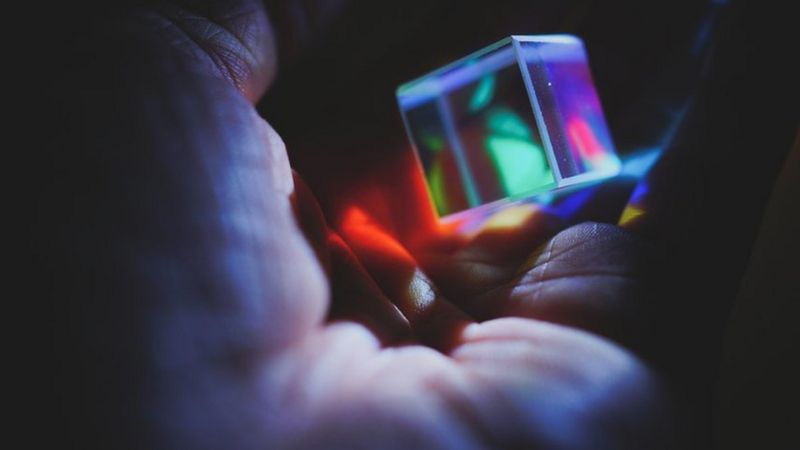

EN EL CINE
Star Trek
En la serie original, los cristales de dilitio se formaban únicamente de manera natural, convirtiendo su búsqueda en el argumento de varias historias. En Star Trek IV: Misión: salvar la Tierra, Spock descubrió un método para recristalizar el dilitio que permitió a la tripulación regenerar los cristales del ave de presa klingon capturado. El método consistía en usar reactores de fisión del siglo XX para reunir fotones de alta energía que regeneraban los cristales

Superman y los Cristales
Microsoft presentó ayer en su conferencia Ignite 2019 un sorprendente método de almacenamiento de datos. La compañía de Bill Gates ha trabajado de manera conjunta con Warner Bros. para almacenar y recuperar la totalidad de la película de Superman de 1978 en un fragmento de cristal de 75 por 75 por 2 milímetros de espesor. La placa cristalina es “aproximadamente del tamaño de un posavasos para bebidas”, según explica Microsoft en un comunicado oficial.

Rick y Morty cristales de la muerte
Al principio del episodio, Rick y Morty deciden comenzar a crear cristales de la muerte, que permiten a sus portadores ver sus futuros alternativos y ver cómo éstos cambian en función de sus acciones.
ARTICULOS
Cristales en el Tiempo
En 2012, el físico teórico Frank Wilczek propuso un polémico concepto para describir un nuevo estado de la materia que desafiaba las leyes de la física. "Cristales de tiempo", los llamó Wilczek, quien en 2004 ganó el Premio Nobel de física.
Al principio, varios de sus colegas dijeron que era simplemente imposible crear cristales de tiempo, pero luego, varias investigaciones, incluyendo un reciente estudio de la Universidad de Granada en España, han comenzado a mostrar que quizás sí es posible crear este extraño material.
Producir estos cristales nos permitiría medir el tiempo y la distancias con una "precisión exquisita", como escribió Wilczek en un artículo en la revista Scientific American.
Para leer el articulo completo entre aca

LIBROS
Los físicos y los astrónomos han determinado que la mayor parte de la materia presente en el universo es «materia oscura»: una sustancia cuya existencia puede deducirse a partir de sus efectos gravitatorios, pero no a través de interacciones electromagnéticas, como las que encontramos en la materia ordinaria.
Mundos oscuros
Existen dos razones para creer que el universo contiene una forma desconocida de materia, llamada materia oscura. No solo las estrellas y las galaxias se mueven como si fueran arrastradas por la gravedad de un material invisible, sino que algunas propiedades de las partículas elementales parecen delatar la existencia de nuevas partículas.